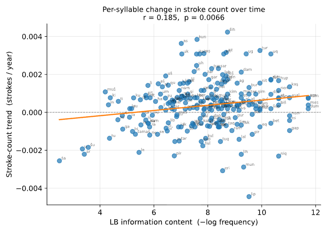
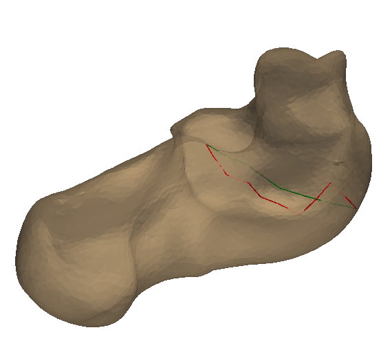
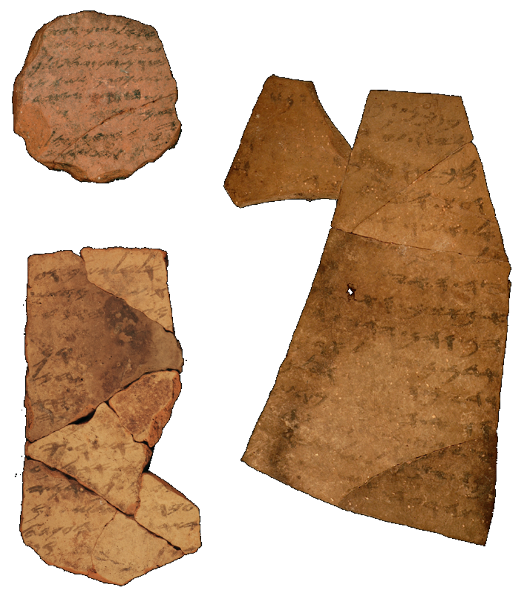

Scripta/Spectra Lab
Computational Analysis and Imaging for Cultural Heritage
Directed by Barak Sober · The Hebrew University of Jerusalem
The Scripta/Spectra Lab develops mathematics, statistics, and imaging for the study of human culture — reading ancient scripts, tracing how writing evolves, and recovering what the eye can no longer see — while letting the hard problems of humanistic data reshape the mathematics itself.

Principal Investigator
Barak Sober
Barak Sober is a Senior Lecturer in Statistics, Data Science and Digital Humanities at the Hebrew University of Jerusalem, and directs the Scripta/Spectra Lab. He works where geometry and statistics meet the study of human culture — from ancient scripts and inscriptions to the mathematics of high-dimensional data.
More about the PI →Research
Three core directions, one throughline: mathematics and imaging in the service of the humanities — and humanistic data reshaping the mathematics.

Ancient Script & Text Evolution
How and why writing changes over time — its letterforms, its language, and the societies behind it.
Explore →
Manifold-Based Estimation
Provable-rate estimation of manifolds — and the geometry riding on them — from finite, noisy, high-dimensional data.
Explore →
Hyperspectral Imaging of Inscriptions
Non-invasive spectral imaging that both reveals unreadable ancient ink and characterizes the materials that made it.
Explore →The idea
Humanistic subjects — scripts, paintings, literary texts, historical processes — are now digital or digitizable at high resolution, opening them to the same mathematical tools that transformed the natural sciences. The converse matters just as much: humanistic data are small, incomplete, and interpretive, and those constraints push the mathematics to become sharper. We work on both directions of that exchange.
About the PI →Recent highlights
- 2026GrantNew grant — The Principles of Handwritten Script Evolution (Volkswagenstiftung).
- 2026GrantNew grant — AI Analysis of Small Data: Dating Akkadian Literary Texts (Schmidt Sciences – Humanities and Artificial Intelligence Virtual Institute).
- 2026PaperNew paper in Nature Astronomy: “Molecular diversity as a biosignature”.
- 2026PaperNew paper in Meghilot: “מספר הסופרים במגילת ישעיה השלמה: הצעה חדשה”.
The Scripta/Spectra Lab is part of the Center for Digital Humanities at the Hebrew University of Jerusalem.